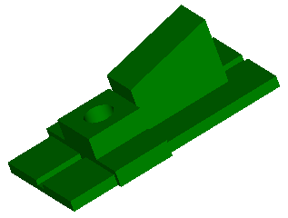
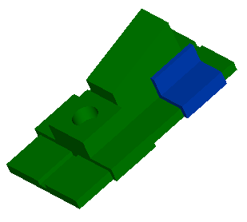
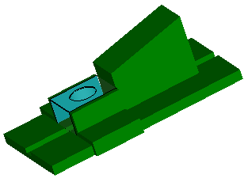
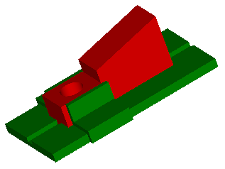
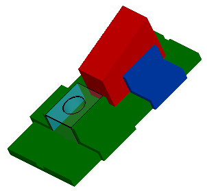

Comparing assemblies
Use the File menu→Tools tab→Compare Models command  to find changes in an assembly. The comparison detects the following:
to find changes in an assembly. The comparison detects the following:
-
volume common to both assemblies
-
added volume (components added or volume added in a component)
-
removed volume (components removed or volume removed from a component)
-
components that have changed positions
Assembly comparisons can be slow if two different assemblies are compared or there are many modified parts in two similar assemblies.
No differences found
When the comparison results display all green volume, no differences were detected. All volume is common to both models.
The user can define the color of common volume.

Components added
When the comparison results contains any blue volume, added volume was detected. This means that a component was added to the working model. Run the comparison report to find out what components were added.
The user can define the color of the added volume.

Components removed
When the comparison results contains any glass colored volume, removed volume was detected. This means that a component was removed from the working model. Run the comparison report to find out what components were removed.

Position change
When the comparison results contains any red colored volume, a change in position was detected. This means that a component was moved in the working model. Run the comparison report to find out what components changed position.

Mixed results
The results can contain a mix of all possible volume changes. Run the comparison report to find out what differences are found in the two compared assemblies.
